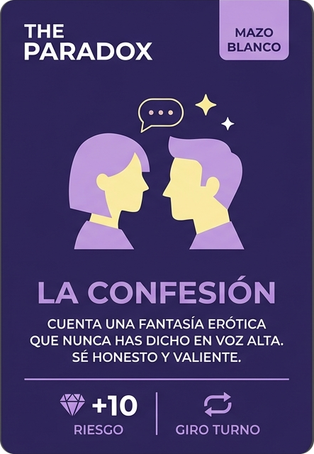

The Paradox es una comunidad íntima para parejas jóvenes con curiosidad por el mundo liberal. Sin presión, sin juicios — solo vosotros, vuestro ritmo y el espacio para descubrirlo.
Nuestros valores
Sin perfiles públicos, sin filtraciones. Compartes solo lo que eliges, con quien eliges.
Una cultura construida sobre el consentimiento. Los límites se respetan siempre, sin cuestionarlos.
Sin presión, sin plazos. Observa, escucha o acércate cuando sientas que es el momento.

The Paradox no es solo una reunión; es una estructura diseñada para que el deseo fluya sin la incomodidad de romper el hielo de forma convencional. El corazón de la tarde late alrededor de nuestra mesa con un sistema de gamificación erótica único: una baraja de 120 cartas exclusiva que actúa como el perfecto facilitador y lubricante social para parejas y perfiles individuales. El juego está diseñado para desarmar la rutina y estimular la interacción a través de un pacto común: aquí, la culpa de lo que ocurre siempre es del azar.
Conexión verbal e intimidad psicológica. Dinámicas diseñadas para romper el hielo, desarmar la rutina y sintonizar las mentes.
El primer contacto físico y el juego sensorial. Tensión sugerente a través de miradas, masajes y roces bajo un estricto consentimiento.
Desnudez parcial y la exposición directa del deseo. Exploración carnal explícita para quienes eligen cruzar el umbral del voyeurismo activo.
Exclusivo para retiros. Interacciones colectivas, clímax biológico y fantasías sin límites que se activan solo si el 100% de la sala lo decide.
The Paradox es un club concebido única y exclusivamente para parejas consolidadas; cualquier otra entidad o perfil individual no se considera apto para entrar. Para garantizar la sintonía del club, se precisa que ambos miembros contribuyan y participen activamente en el día a día. Quedan explícitamente prohibidos los escenarios donde solo una de las dos personas interactúa o lleva la voz cantante en nombre de la relación.
Queremos que The Paradox sea un espacio con energía joven. Por eso buscamos que la media de edad entre los miembros de cada pareja no supere los 40 años — no como un filtro frío, sino como una decisión consciente para que la sintonía entre parejas sea real y natural.
Creemos en una verdad hermosa y contradictoria: que abrir vuestro espacio y permitiros descubrir nuevas fronteras es, precisamente, el acto de confianza más puro que os terminará uniendo más.
El mundo convencional suele juzgar lo que no entiende. Aquí dentro, las normas de la monogamia tradicional estricta se quedan en la puerta. Este es un espacio libre de prejuicios, diseñado para normalizar vuestras fantasías con total naturalidad.
No hay metas que alcanzar, ni un manual que seguir, ni una forma "correcta" de ser liberal. Desde el simple debate y el juego mental hasta dar pasos más firmes; cada etapa del proceso es válida y solo vosotros decidís cuándo avanzar.
La discreción es el pilar que sostiene nuestra comunidad. Protegemos vuestra identidad, vuestros datos y vuestra intimidad como el tesoro más valioso. Lo que se comparte en The Paradox, permanece bajo absoluto secreto.
El consentimiento aquí no es una sugerencia, es la ley suprema. Un "no", una duda o un silencio se respeta de inmediato, sin presiones. Para salvaguardar este ecosistema, la administración se reserva de forma estricta e irrevocable el derecho de admisión y expulsión de cualquier pareja que vulnere el respeto, incomode a los miembros o incumpla estas normas.
Antes de actuar, hay que hablar. Fomentamos la comunicación honesta como la herramienta erótica más potente. Compartir vuestros miedos, límites y deseos con vuestra pareja y con la comunidad es el primer paso del viaje.
Huyamos de la masificación y del contenido explícito sin sentido. Somos un entorno selecto para el intercambio de experiencias. Con el fin de acompañar, guiar y ayudar a las parejas que lo deseen, la comunidad organizará eventos presenciales diseñados bajo las más estrictas y estimadas medidas de precaución, seguridad y privacidad.
Entendemos que dar el paso da vértigo porque implica cuestionar lo aprendido desde la infancia. Estamos aquí para acompañaros a desarmar esos mitos y barreras, ayudándoos a rediseñar las reglas de vuestra relación a vuestra medida.
Nuestro método
The Paradox organiza retiros en casas rurales diseñados desde cero para que explorar sea cómodo, natural y seguro. Lejos del ambiente impersonal o agresivo de otros espacios, cada estancia está pensada para que lo único que tengáis que hacer sea llegar y estar.
Cada retiro se organiza para un máximo de cuatro parejas. Un grupo lo suficientemente pequeño para que la confianza se construya de forma natural — y lo suficientemente diverso para que algo pase.
Las estancias son de una noche. The Paradox se encarga de la organización y los detalles logísticos para que vosotros solo tengáis que llegar con ganas de explorar, disfrutar y aprender a vuestro ritmo.
Los retiros están reservados exclusivamente para parejas de la comunidad. Un espacio de confianza que se construye desde el primer día de pertenencia y que se protege con el mismo cuidado.
Cada retiro cuenta con sexólogas y nuestro juego de cartas como facilitadores. No para dirigir, sino para acompañar y abrir puertas cuando el grupo lo necesita.
El acceso a The Paradox es exclusivo por invitación y requiere que seáis una pareja con el Manifiesto previamente leído y aceptado. Para garantizar la sintonía y seguridad del grupo, revisaremos vuestra solicitud mediante una breve verificación antes de ser aprobados. Cuéntanos un poco sobre vosotros y os contactaremos con absoluta discreción.
Solicitar una invitación